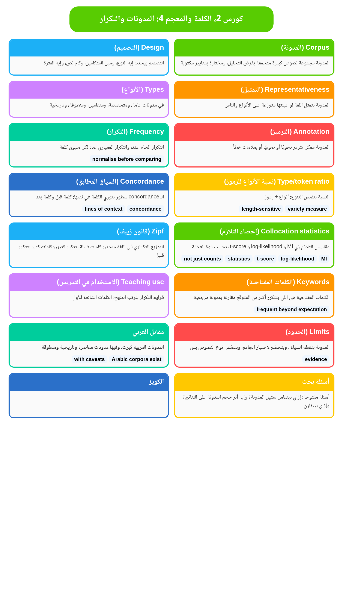

آداب الإنجليزية
: قواعد وجرامر وشعر وأساطير
⭐
0
🔥
استمر!
📈
كورس 2، الكلمة والمعجم 4: المدونات والتكرار
📊
المستوى: من الصفر
كورس ٢ درس ٦٩
💬
القواعد الأكاديمية
📄 حمّل PDF الدرس
🧠 الخريطة الذهنية PDF
🧠 شوف الخريطة الذهنية للدرس

→
الدرس اللي قبله
كل دروس الكورس
الدرس اللي بعده
←